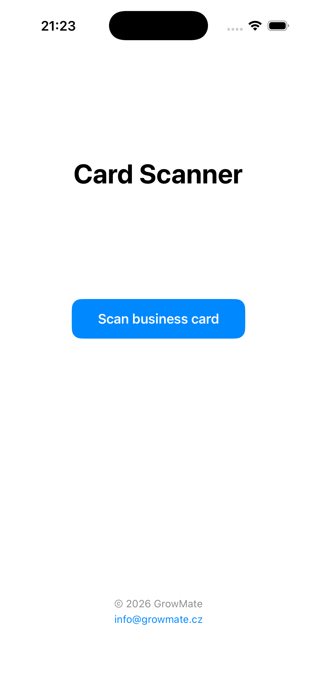
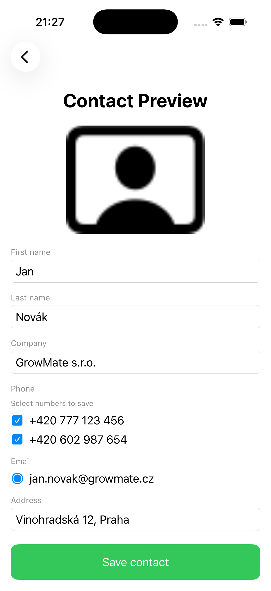
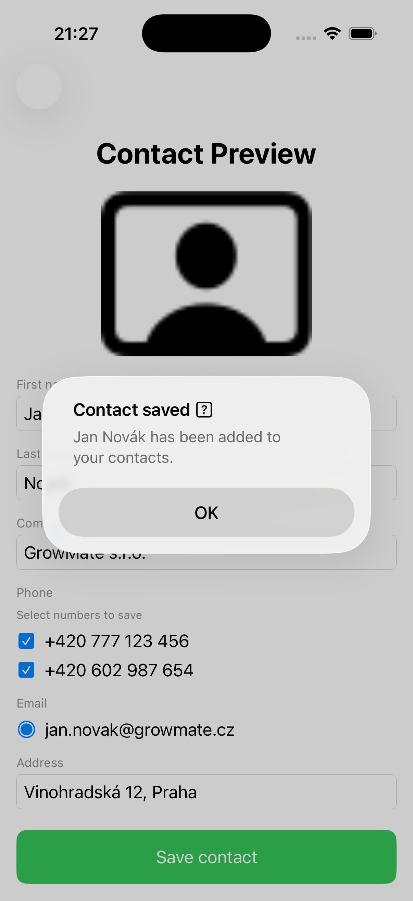

GrowMate
Jednoduché aplikace pro každodenní život.
Jednoduché aplikace pro každodenní život.
Cardly vám umožní rychle skenovat a ukládat vizitky pomocí iPhonu. Proměňte papírové vizitky na přehledné digitální kontakty během několika sekund.


